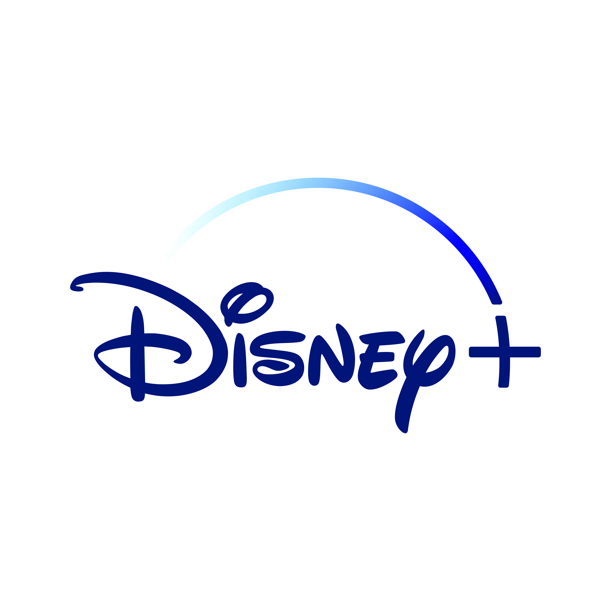

Dragón chimuelo
Chimuelo (Toothless en su idioma original y Desdentao para España) es el nombre del dragón de Hipo; tanto en la serie de libros como en las películas. En los libros, es un Giganticus Maximus Acuaticus, mientras que en la adaptación cinematográfica él es un negro y grande Furia Nocturna.
Chimuelo es el último Furia Nocturna, por lo que su apariencia física es todo lo que se puede estudiar para aprender sobre la anatomía de un furia nocturna. Tiene escamas de color negro que cubren todo su cuerpo y al principio, sus costados y alas tienen pequeños parches de luz en un patrón similar al de una manta raya, aunque debido a la falta de calidad en la segunda y como la tercera película está hecha a partir de la segunda, estos parches son eliminados, haciendo que su coloración más oscura sea más uniforme.
shrek
Érase una vez… un gran ogro llamado Shrek que vivía tranquilamente en un pantano muy lejano, lejos de los ruidos mundanales y, sobre todo, lejos de cualquier ser viviente que le pudiera molestar. Era un ogro intratable que su vida transcurría tranquila y lo único que se molestaba en hacer era asustar a los intrusos que se acercaban a su hábitat.
Pero un día, su paz y soledad se ven alteradas, su hogar es invadido por las criaturas de los cuentos de hadas enviados allí por el malvado Lord Farquaad. Todos los personajes de cuentos de hadas han sido desterrados y no han encontrado un sitio mejor donde ir que el pantano de Shrek. Entre tantos personajes conoce principalmente a uno de ellos, al Burro, con el que decide ir a ver a Lord Farquaad para que desocupe el pantano. Para ello llegan a un pacto:
Dracula
El conde Drácula se ha retirado a los confines de Transilvania con su hijita Mavis, allí dedica toda su energía a protegerla de los humanos. En el lujoso hotel donde viven, los monstruos son siempre bien recibidos, Hotel Transilvania es un lugar donde todos pueden descansar, sin que los humanos molesten. Pero el día en que Mavis llega a la mayoría de edad y su padre ha organizado una gran fiesta, por accidente, aparece un joven humano de su edad.
Los vampiros, y los monstruos en general, ya no son lo que eran. Tal vez sea para bien, han pasado muchos años desde aquel Nosferatu y ahora dan miedo… otras cosas. Como un regalo del viejo baúl de la Hammer vienen un puñado de monstruos clásicos, decididos a hacernos pasar un buen rato y a reconciliarse con la humanidad.
Moster
Los creadores de Toy Story, ganadores del premio de la Academia, presentan esta extraordinaria obra maestra de animación por computadora que combina impecables efectos visuales y una entretenida historia de terror, humor y ternura. La película narra las aventuras de Sulley y Mike, dos simpáticos monstruos que trabajan para Monsters, Inc., la mayor industria de procesamiento de gritos humanos de Monstrópolis. Su trabajo consiste en esconderse en los armarios y esperar la noche para salir y asustar a los niños.
El objetivo es recolectar la mayor cantidad posible de gritos humanos, fuente principal de energía de la planta industrial. Desde que los niños no se asustan fácilmente como en otras épocas, la compañía está atravesando una de las crisis energéticas más importantes de la historia.
Tinker Bell
La historia explora el antiguo mito de una bestia legendaria, cuyo distante rugido enciende la curiosidad de Fawn, buena amiga de Tinker Bell y hada de los animales que no teme romper las reglas para ayudar a una criatura que lo necesita.
Pero este animal – enorme y extraño, con ojos verdes brillantes - no es realmente bienvenido en la Tierra de las Hadas, y las hadas exploradoras están decididas a capturar a la misteriosa bestia antes de que destruya su hogar. Fawn, quien puede ver el corazón tierno que se esconde debajo de su brusco exterior, deberá convencer a Tinker Bell y al resto de las chicas de arriesgar todo para rescatar a la Bestia de Nunca Jamás antes de que se acabe el tiempo.

Robots
Rodney Hojalata es un joven y genial inventor que sueña con hacer del mundo un lugar mejor y encabeza una revolución en contra de un directivo corporativo que desea destruir a los modelos antiguos. Cappy es una atractiva ejecutiva robot de la que Rodney se queda prendado al instante.
En un mundo de robots, el joven Rodney anhela convertirse en inventor, tal como su ídolo de infancia, Gran soldador. Luego de ser despedido de su trabajo, decide viajar a la ciudad e intentar cumplir su sueño. Sin embargo, las cosas no van a resultar como esperaba, pues las Empresas Gran Soldador ahora son manejadas por un inescrupuloso empresario que pretende acabar con todos los antiguos modelos, y así, ganar mucho dinero.